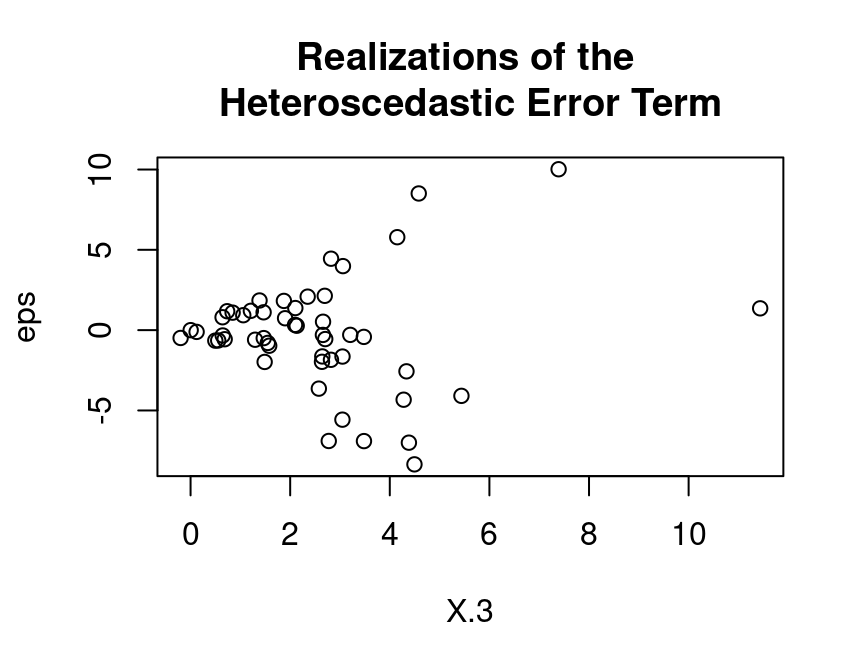
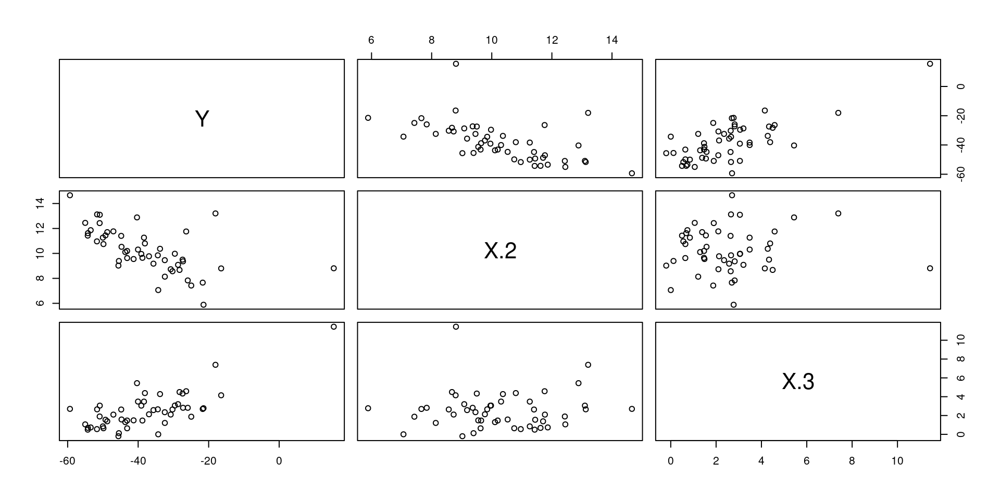
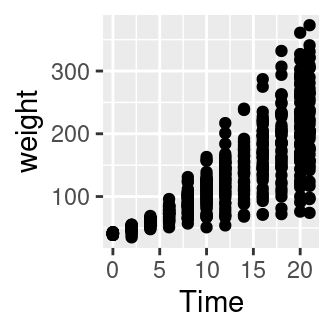
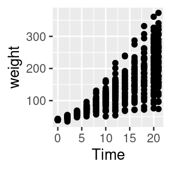

Ch. 1 Introduction to R
This tutorial aims to serve as an introduction to the software package R. Other very good and much more exhaustive tutorials and useful reference-cards can be found at the following links:
- Reference card for R commands (always useful)
- Matlab/R reference card (for those who are more familiar with Matlab)
- The official Introduction to R (very detailed)
- And many more at www.r-project.org (see “Documents”)
- An interactive introduction can be done online at: www.datacamp.com
- An excellent book project which covers also advanced issues such as “writing performant code” and “package development”: adv-r.had.co.nz
Why R?
- R is free of charge from: www.r-project.org
- The celebrated IDE RStudio for R is also free of charge: www.rstudio.com
- R is equipped with one of the most flexible and powerful graphics routines available anywhere.
For instance, check out one of the following repositories: - Today, R is the de-facto standard for statistical science.
1.1 Short Glossary
Lets start the tutorial with a (very) short glossary:
- Console: The thing with the “>” sign at the beginning.
- Script file: An ordinary text file with suffix “.R”. For instance, yourFavoritFileName.R.
- Working directory: The file-directory you are working in. Useful commands: with
getwd()you get the location of your current working directory andsetwd()allows you to set a new location for it. - Workspace: This is a hidden file (stored in the working directory), where all objects you use (e.g., data, matrices, vectors, variables, functions, etc.) are stored. Useful commands:
ls()shows all elements in our current workspace andrm(list=ls())deletes all elements in our current workspace.
1.2 First Steps
A good idea is to use a script file such as yourFavoritFileName.R in order to store your R commands. You can send single lines or marked regions of your R-code to the console by pressing the keys STRG+ENTER.
To begin with baby steps, do some simple computations:
2+2 # and all the others: *,/,-,^2,^3,... ## [1] 4Note: Everything that is written after the #-sign is ignored by R, which is very useful to comment your code.
The assignment operator will be your most often used tool. Here an example to create a scalar variable:
x <- 4
x## [1] 44 -> x # possible but unusual
x## [1] 4Note: The R community loves the <- assignment operator, which is a very unusual syntax. Alternatively, you can use the = operator.
And now a more interesting object - a vector:
y <- c(2,7,4,1)
y## [1] 2 7 4 1The command ls() shows the total content of your current workspace, and the command rm(list=ls()) deletes all elements of your current workspace:
ls()## [1] "x" "y"rm(list=ls())
ls()## character(0)Note: RStudio’s Environment pane also lists all the elements in your current workspace. That is, the command ls() becomes a bit obsolete when working with RStudio.
Let’s try how we can compute with vectors and scalars in R.
x <- 4
y <- c(2,7,4,1)
x*y # each element in the vector, y, is multiplied by the scalar, x.## [1] 8 28 16 4y*y # this is a term by term product of the elements in y## [1] 4 49 16 1Performing vector multiplications as you might expect from your last math-course, e.g., an outer product: \(y\,y^\top\):
y %*% t(y)## [,1] [,2] [,3] [,4]
## [1,] 4 14 8 2
## [2,] 14 49 28 7
## [3,] 8 28 16 4
## [4,] 2 7 4 1Or an inner product \(y^\top y\):
t(y) %*% y## [,1]
## [1,] 70Note: Sometimes, R’s treatment of vectors can be annoying. The product y %*% y is treated as the product t(y) %*% y.
The term-by-term execution as in the above example, y*y, is actually a central strength of R. We can conduct many operations vector-wisely:
y^2## [1] 4 49 16 1log(y)## [1] 0.6931472 1.9459101 1.3862944 0.0000000exp(y)## [1] 7.389056 1096.633158 54.598150 2.718282y-mean(y)## [1] -1.5 3.5 0.5 -2.5(y-mean(y))/sd(y) # standardization ## [1] -0.5669467 1.3228757 0.1889822 -0.9449112This is a central characteristic of so called matrix based languages like R (or Matlab). Other programming languages often have to use loops instead:
N <- length(y)
1:N
y.sq <- numeric(N)
y.sq
for(i in 1:N){
y.sq[i] <- y[i]^2
if(i == N){
print(y.sq)
}
}The for()-loop is the most common loop. But there is also a while()-loop and a repeat()-loop. However, loops in R can be rather slow, therefore, try to avoid them!
Useful commands to produce sequences of numbers:
1:10
-10:10
?seq # Help for the seq()-function
seq(from=1, to=100, by=7)Using the sequence command 1:16, we can go for our first matrix:
?matrix
A <- matrix(data=1:16, nrow=4, ncol=4)
A## [,1] [,2] [,3] [,4]
## [1,] 1 5 9 13
## [2,] 2 6 10 14
## [3,] 3 7 11 15
## [4,] 4 8 12 16A <- matrix(1:16, 4, 4)Note that a matrix has always two dimensions, but a vector has only one dimension:
dim(A) # Dimension of matrix A?## [1] 4 4dim(y) # dim() does not operate on vectors.## NULLlength(y) # Length of vector y?## [1] 4Lets play a bit with the matrix A and the vector y. As we have seen in the loop above, the []-operator selects elements of vectors and matrices:
A[,1]
A[4,4]
y[c(1,4)]This can be done on a more logical basis, too. For example, if you want to know which elements in the first column of matrix A are strictly greater than 2:
A[,1][A[,1]>2]## [1] 3 4# Note that this give you a boolean vector:
A[,1]>2## [1] FALSE FALSE TRUE TRUE# And you can use it in a non-sense relation, too:
y[A[,1]>2]## [1] 4 1Note: Logical operations return so-called boolean objects, i.e., either a TRUE or a FALSE. For instance, if we ask R whether 1>2 we get the answer FALSE.
1.3 Further Data Objects
Besides classical data objects such as scalars, vectors, and matrices there are three further data objects in R:
1. The array: As a matrix but with more dimensions. Here is an example of a \(2\times 2\times 2\)-dimensional array:
myFirst.Array <- array(c(1:8), dim=c(2,2,2)) # Take a look at it!
2. The list: In lists you can organize different kinds of data. E.g., consider the following example:
myFirst.List <- list("Some_Numbers" = c(66, 76, 55, 12, 4, 66, 8, 99),
"Animals" = c("Rabbit", "Cat", "Elefant"),
"My_Series" = c(30:1)) A very useful function to find specific values and entries within lists is the str()-function:
str(myFirst.List)## List of 3
## $ Some_Numbers: num [1:8] 66 76 55 12 4 66 8 99
## $ Animals : chr [1:3] "Rabbit" "Cat" "Elefant"
## $ My_Series : int [1:30] 30 29 28 27 26 25 24 23 22 21 ...
3. The data frame: A data.frame is a list-object but with some more formal restrictions (e.g., equal number of rows for all columns). As indicated by its name, a data.frame-object is designed to store data:
myFirst.Dataframe <- data.frame("Credit_Default" = c( 0, 0, 1, 0, 1, 1),
"Age" = c(35,41,55,36,44,26),
"Loan_in_1000_EUR" = c(55,65,23,12,98,76))
# Take a look at it!
1.4 Simple Regression Analysis using R
Alright, let’s do some statistics with real data. You can download the data HERE. Save it on your computer, at a place where you can find it, and give the path (e.g. "C:\textbackslash path\textbackslash auto.data.csv", which references to the data, to the file-argument of the function read.csv():
# ATTENTION! YOU HAVE TO CHANGE "\" TO "/":
auto.data <- read.csv(file="C:/your_path/autodata.txt", header=TRUE)
head(auto.data)
If you have problems to read the data into R, go on with these commands. (For this you need a working internet connection!):
# install.packages("readr")
library("readr")
auto.data <- suppressMessages(read_csv(file = "https://cdn.rawgit.com/lidom/Teaching_Repo/bc692b56/autodata.csv",col_names = TRUE))
# head(auto.data)
You can select specific variables of the auto.data using the $-operator:
gasolin.consumption <- auto.data$MPG.city
car.weight <- auto.data$Weight
## Take a look at the first elements of these vectors:
head(cbind(gasolin.consumption,car.weight))## gasolin.consumption car.weight
## [1,] 25 2705
## [2,] 18 3560
## [3,] 20 3375
## [4,] 19 3405
## [5,] 22 3640
## [6,] 22 2880
This is how you can produce your first plot:
## Plot the data:
plot(y=gasolin.consumption, x=car.weight,
xlab="Car-Weight (US-Pounds)",
ylab="Consumption (Miles/Gallon)",
main="Buy Light-Weight Cars!")
As a first step, we might assume a simple kind of linear relationship between the variables gasolin.consumption and car.weight. Let us assume that the data was generated by the following simple regression model: \[
y_i=\alpha+\beta_1 x_i+\varepsilon_i,\quad i=1,\dots,n
\] where \(y_i\) denotes the gasoline-consumption, \(x_i\) the weight of car \(i\), and \(\varepsilon_i\) is a mean zero constant variance noise term. (This is clearly a non-sense model!)
The command lm() computes the estimates of this linear regression model. The command (in fact it’s a method) summary() computes further quantities of general interest from the object that was returned from the lm() function.
lm.result <- lm(gasolin.consumption~car.weight)
lm.summary <- summary(lm.result)
lm.summary##
## Call:
## lm(formula = gasolin.consumption ~ car.weight)
##
## Residuals:
## Min 1Q Median 3Q Max
## -6.7946 -1.9711 0.0249 1.1855 13.8278
##
## Coefficients:
## Estimate Std. Error t value Pr(>|t|)
## (Intercept) 47.048353 1.679912 28.01 <2e-16 ***
## car.weight -0.008032 0.000537 -14.96 <2e-16 ***
## ---
## Signif. codes: 0 '***' 0.001 '**' 0.01 '*' 0.05 '.' 0.1 ' ' 1
##
## Residual standard error: 3.038 on 91 degrees of freedom
## Multiple R-squared: 0.7109, Adjusted R-squared: 0.7077
## F-statistic: 223.8 on 1 and 91 DF, p-value: < 2.2e-16
Of course, we want to have a possibility to access all the quantities computed so far, e.g., in order to plot the results. This can be done as following:
## Accessing the computed quantities
names(lm.summary) ## Alternatively: str(lm.summary)## [1] "call" "terms" "residuals" "coefficients"
## [5] "aliased" "sigma" "df" "r.squared"
## [9] "adj.r.squared" "fstatistic" "cov.unscaled"alpha <- lm.summary$coefficients[1]
beta <- lm.summary$coefficients[2]
## Plot all:
plot(y=gasolin.consumption, x=car.weight,
xlab="Car-Weight (US-Pounds)",
ylab="Consumption (Miles/Gallon)",
main="Buy light-weight Cars!")
abline(a=alpha,
b=beta, col="red")
1.5 Programming in R
Let’s write, i.e., program our own R-function for estimating linear regression models. In order to be able to validate our function, we start with simulating data for which we then know all true parameters. Simulating data is like being the “Data-God”: For instance, we generate realizations of the error term \(\varepsilon_i\), i.e., something which we never observe in real data.
Let us consider the following multiple regression model:
\[y_i=\beta_1 +\beta_2 x_{2i}+\beta_3 x_{3i}+\varepsilon_{i},\quad i=1,\dots,n,\] where \(\varepsilon_{i}\) is a heteroscedastic error term \[\varepsilon_{i}\sim N(0,\sigma_i^2),\quad \sigma_i=x_{3i},\]
and where for all \(i=1,\dots,n=50\):
- \(x_{2i}\sim N(10,1.5^2)\)
- \(x_{3i}\) comes from a t-distribution with 5 degrees of freedom and non-centrality parameter 2
set.seed(109) # Sets the "seed" of the random number generators:
n <- 50 # Number of observations
## Generate two explanatory variables plus an intercept-variable:
X.1 <- rep(1, n) # Intercept
X.2 <- rnorm(n, mean=10, sd=1.5) # Draw realizations form a normal distr.
X.3 <- rt(n, df=5, ncp=2) # Draw realizations form a t-distr.
X <- cbind(X.1, X.2, X.3) # Save as a Nx3-dimensional data matrix.OK, we have regressors, i.e., data that we also have in real data sets.
Now we define the elements of the \(\beta\)-vector. Be aware of the difference: In real data sets we do not know the true \(\beta\)-vector, but try to estimate it. However, when simulating data, we determine (as “Data-Gods”) the true \(\beta\)-vector and can compare our estimate \(\hat{\beta}\) with the true \(\beta\):
## Define the slope-coefficients
beta.vec <- c(1,-5,5)
We still need to simulate realizations of the dependent variable \(y_i\). Remember that \(y_i=\beta_1 x_{1i}+\beta_1 x_{2i}+\beta_3 x_{3i}+\varepsilon_{i}\). That is, we only need realizations from the error terms \(\varepsilon_i\) in order to compute the realizations from \(y_i\). This is how you can simulate realizations from the heteroscedastic error terms \(\varepsilon_i\):
## Generate realizations from the heteroscadastic error term
eps <- (X.3)*rnorm(n, mean=0, sd=1)Take a look at the heteroscedasticity in the error term:
plot(y=eps, x=X.3,
main="Realizations of the \nHeteroscedastic Error Term")
With the (pseudo-random) realizations from \(\varepsilon_i\), we can finally generate realizations from the dependent variable \(y_i\):
## Dependent variable:
y <- X %*% beta.vec + epsLet’s take a look at the data:
mydata <- data.frame("Y"=y, "X.1"=X.1, "X.2"=X.2, "X.3"=X.3)
pairs(mydata[,-2]) # The '-2' removes the intercept variable "X.1"
Once we have data, we can compute the OLS estimate of the true \(\beta\) vector. Remember the formula: \[\hat{\beta}=(X^\top X)^{-1}X^\top y\] In R-Code this is: \((X^\top X)^{-1}=\)solve(t(X) %*% X), i.e.:
## Computation of the beta-Vector:
beta.hat <- solve(t(X) %*% X) %*% t(X) %*% y
beta.hat## [,1]
## X.1 -2.735042
## X.2 -4.685719
## X.3 5.091811
Well done. Using the above lines of code we can easily program our own myOLSFun() function!
myOLSFun <- function(y, x, add.intercept=FALSE){
## Number of Observations:
n <- length(y)
## Add an intercept to x:
if(add.intercept){
Intercept <- rep(1, n)
x <- cbind(Intercept, x)
}
## Estimation of the slope-parameters:
beta.hat.vec <- solve(t(x) %*% x) %*% t(x) %*% y
## Return the result:
return(beta.hat.vec)
}
## Run the function:
myOLSFun(y=y, x=X)## [,1]
## X.1 -2.735042
## X.2 -4.685719
## X.3 5.091811
Can you extend the function for the computation of the covariance matrix of the slope-estimates, several measures of fits (R\(^2\), adj.-R\(^2\), etc.), t-tests, …?
1.6 R-packages
One of the best features in R are its contributed packages. The list of all packages on CRAN is impressive! Take a look at it HERE
For instance, nice plots can be produced using the R-package is ggplot2. You can find an intro do this package HERE.
# install.packages("ggplot2")
library("ggplot2")
qplot(Sepal.Length, Petal.Length, data = iris, color = Species)
Of course, ggplot2 concerns “only” plotting, but you’ll find R-packages for almost any statistical method out there.
1.7 Tidyverse
The tidyverse package is a collection of packages that lets you import, manipulate, explore, visualize and model data in a harmonized and consistent way which helps you to be more productive.
Installing the tidyverse package:
install.packages("tidyverse")To use the tidyverse package load it using the library() function:
library(tidyverse)## ── Attaching packages ──────────────────────────────────────────────────────────────────── tidyverse 1.2.1 ──## ✔ tibble 1.4.2 ✔ dplyr 0.7.6
## ✔ tidyr 0.8.1 ✔ stringr 1.2.0
## ✔ purrr 0.2.5 ✔ forcats 0.3.0## ── Conflicts ─────────────────────────────────────────────────────────────────────── tidyverse_conflicts() ──
## ✖ dplyr::filter() masks stats::filter()
## ✖ dplyr::lag() masks stats::lag()Chick Weight Data
R comes with many datasets installed. We will use the ChickWeight dataset to learn about the tidyverse. The help system gives a basic summary of the experiment from which the data was collect:
“The body weights of the chicks were measured at birth and every second day thereafter until day 20. They were also measured on day 21. There were four groups of chicks on different protein diets.”
You can get more information, including references by typing:
help("ChickWeight")The Data: There are 578 observations (rows) and 4 variables:
Chick– unique ID for each chick.Diet– one of four protein diets.Time– number of days since birth.weight– body weight of chick in grams.
Note: weight has a lower case w (recall R is case sensitive).
Store the data locally:
ChickWeight %>%
select(Chick, Diet, Time, weight) %>%
arrange(Chick, Diet, Time) %>%
write_csv("ChickWeight.csv")First we will import the data from a file called ChickWeight.csv using the read_csv() function from the readr package (part of the tidyverse). The first thing to do, outside of R, is to open the file ChickWeight.csv to check what it contains and that it makes sense. Now we can import the data as follows:
CW <- read_csv("ChickWeight.csv")## Parsed with column specification:
## cols(
## Chick = col_integer(),
## Diet = col_integer(),
## Time = col_integer(),
## weight = col_integer()
## )If all goes well then the data is now stored in an R object called CW. If you get the following error message then you need to change the working directory to where the data is stored.
Error: 'ChickWeight.csv' does not exist in current
working directory ...Changing the working directory: In RStudio you can use the menu bar (“Session - Set Working Directory - Choose Directory…”). Alternatively, you can use the function setwd().
Looking at the Dataset: To look at the data type just type the object (dataset) name:
CW## # A tibble: 578 x 4
## Chick Diet Time weight
## <int> <int> <int> <int>
## 1 18 1 0 39
## 2 18 1 2 35
## 3 16 1 0 41
## 4 16 1 2 45
## 5 16 1 4 49
## 6 16 1 6 51
## 7 16 1 8 57
## 8 16 1 10 51
## 9 16 1 12 54
## 10 15 1 0 41
## # ... with 568 more rowsIf there are too many variables then not all them may be printed. To overcome this issue we can use the glimpse() function which makes it possible to see every column in your dataset (called a “data frame” in R speak).
glimpse(CW)## Observations: 578
## Variables: 4
## $ Chick <int> 18, 18, 16, 16, 16, 16, 16, 16, 16, 15, 15, 15, 15, 15,...
## $ Diet <int> 1, 1, 1, 1, 1, 1, 1, 1, 1, 1, 1, 1, 1, 1, 1, 1, 1, 1, 1...
## $ Time <int> 0, 2, 0, 2, 4, 6, 8, 10, 12, 0, 2, 4, 6, 8, 10, 12, 14,...
## $ weight <int> 39, 35, 41, 45, 49, 51, 57, 51, 54, 41, 49, 56, 64, 68,...The function View() allows for a spread-sheet type of view on the data:
View(CW)1.7.1 Tidyverse: Plotting Basics
To visualise the chick weight data, we will use the ggplot2 package (part of the tidyverse). Our interest is in seeing how the weight changes over time for the chicks by diet. For the moment don’t worry too much about the details just try to build your own understanding and logic. To learn more try different things even if you get an error messages.
Let’s plot the weight data (vertical axis) over time (horizontal axis).
# An empty plot (the plot on the left)
ggplot(CW, aes(Time, weight))
# With data (the plot on the right)
ggplot(CW, aes(Time, weight)) + geom_point()  

Add color for Diet. The graph above does not differentiate between the diets. Let’s use a different color for each diet.
# Adding colour for diet
ggplot(CW,aes(Time,weight,colour=factor(Diet))) +
geom_point() 
It is difficult to conclude anything from this graph as the points are printed on top of one another (with diet 1 underneath and diet 4 at the top).
Factor Variables: Before we continue, we have to make an important change to the CW dataset by making Diet and Time factor variables. This means that R will treat them as categorical variables (see the <fct> variables below) instead of continuous variables. It will simplify our coding. The next section will explain the mutate() function.
CW <- mutate(CW, Diet = factor(Diet))
CW <- mutate(CW, Time = factor(Time))
glimpse(CW)## Observations: 578
## Variables: 4
## $ Chick <int> 18, 18, 16, 16, 16, 16, 16, 16, 16, 15, 15, 15, 15, 15,...
## $ Diet <fct> 1, 1, 1, 1, 1, 1, 1, 1, 1, 1, 1, 1, 1, 1, 1, 1, 1, 1, 1...
## $ Time <fct> 0, 2, 0, 2, 4, 6, 8, 10, 12, 0, 2, 4, 6, 8, 10, 12, 14,...
## $ weight <int> 39, 35, 41, 45, 49, 51, 57, 51, 54, 41, 49, 56, 64, 68,...The facet_wrap() function: To plot each diet separately in a grid using facet_wrap():
# Adding jitter to the points
ggplot(CW, aes(Time, weight, colour=Diet)) +
geom_point() +
facet_wrap(~Diet) +
theme(legend.position = "bottom")
Interpretation: Diet 4 has the least variability but we can’t really say anything about the mean effect of each diet although diet 3 seems to have the highest.
Next we will plot the mean changes over time for each diet using the stat_summary() function:
ggplot(CW, aes(Time, weight,
group=Diet, colour=Diet)) +
stat_summary(fun.y="mean", geom="line") 
Interpretation: We can see that diet 3 has the highest mean weight gains by the end of the experiment. However, we don’t have any information about the variation (uncertainty) in the data.
To see variation between the different diets we use geom_boxplot to plot a box-whisker plot. A note of caution is that the number of chicks per diet is relatively low to produce this plot.
ggplot(CW, aes(Time, weight, colour=Diet)) +
facet_wrap(~Diet) +
geom_boxplot() +
theme(legend.position = "none") +
ggtitle("Chick Weight over Time by Diet")
Interpretation: Diet 3 seems to have the highest “average” weight gain but it has more variation than diet 4 which is consistent with our findings so far.
Let’s finish with a plot that you might include in a publication.
ggplot(CW, aes(Time, weight, group=Diet,
colour=Diet)) +
facet_wrap(~Diet) +
geom_point() +
# geom_jitter() +
stat_summary(fun.y="mean", geom="line",
colour="black") +
theme(legend.position = "none") +
ggtitle("Chick Weight over Time by Diet") +
xlab("Time (days)") +
ylab("Weight (grams)")
1.7.2 Tidyverse: Data Wrangling Basics
In this section we will learn how to wrangle (manipulate) datasets using the tidyverse package. Let’s start with the mutate(), select(), rename(), filter() and arrange() functions.
mutate(): Adds a new variable (column) or modifies an existing one. We already used this above to create factor variables.
# Added a column
CWm1 <- mutate(CW, weightKg = weight/1000)
CWm1## # A tibble: 578 x 5
## Chick Diet Time weight weightKg
## <int> <fct> <fct> <int> <dbl>
## 1 18 1 0 39 0.039
## 2 18 1 2 35 0.035
## 3 16 1 0 41 0.041
## # ... with 575 more rows# Modify an existing column
CWm2 <- mutate(CW, Diet = str_c("Diet ", Diet))
CWm2## # A tibble: 578 x 4
## Chick Diet Time weight
## <int> <chr> <fct> <int>
## 1 18 Diet 1 0 39
## 2 18 Diet 1 2 35
## 3 16 Diet 1 0 41
## # ... with 575 more rows
select(): Keeps, drops or reorders variables.
# Drop the weight variable from CWm1 using minus
select(CWm1, -weight)## # A tibble: 578 x 4
## Chick Diet Time weightKg
## <int> <fct> <fct> <dbl>
## 1 18 1 0 0.039
## 2 18 1 2 0.035
## 3 16 1 0 0.041
## # ... with 575 more rows# Keep variables Time, Diet and weightKg
select(CWm1, Chick, Time, Diet, weightKg)## # A tibble: 578 x 4
## Chick Time Diet weightKg
## <int> <fct> <fct> <dbl>
## 1 18 0 1 0.039
## 2 18 2 1 0.035
## 3 16 0 1 0.041
## # ... with 575 more rows
rename(): Renames variables whilst keeping all variables.
rename(CW, Group = Diet, Weight = weight)## # A tibble: 578 x 4
## Chick Group Time Weight
## <int> <fct> <fct> <int>
## 1 18 1 0 39
## 2 18 1 2 35
## 3 16 1 0 41
## # ... with 575 more rows
filter(): Keeps or drops observations (rows).
filter(CW, Time==21 & weight>300)## # A tibble: 8 x 4
## Chick Diet Time weight
## <int> <fct> <fct> <int>
## 1 7 1 21 305
## 2 29 2 21 309
## 3 21 2 21 331
## # ... with 5 more rowsFor comparing values in vectors use: < (less than), > (greater than), <= (less than and equal to), >= (greater than and equal to), == (equal to) and != (not equal to). These can be combined logically using & (and) and | (or).
arrange(): Changes the order of the observations.
arrange(CW, Chick, Time)## # A tibble: 578 x 4
## Chick Diet Time weight
## <int> <fct> <fct> <int>
## 1 1 1 0 42
## 2 1 1 2 51
## 3 1 1 4 59
## # ... with 575 more rowsarrange(CW, desc(weight))## # A tibble: 578 x 4
## Chick Diet Time weight
## <int> <fct> <fct> <int>
## 1 35 3 21 373
## 2 35 3 20 361
## 3 34 3 21 341
## # ... with 575 more rowsWhat does the desc() do? Try using desc(Time).
1.7.3 The pipe operator %>%
In reality you will end up doing multiple data wrangling steps that you want to save. The pipe operator %>% makes your code nice and readable:
CW21 <- CW %>%
filter(Time %in% c(0, 21)) %>%
rename(Weight = weight) %>%
mutate(Group = factor(str_c("Diet ", Diet))) %>%
select(Chick, Group, Time, Weight) %>%
arrange(Chick, Time)
CW21## # A tibble: 95 x 4
## Chick Group Time Weight
## <int> <fct> <fct> <int>
## 1 1 Diet 1 0 42
## 2 1 Diet 1 21 205
## 3 2 Diet 1 0 40
## # ... with 92 more rowsHint: To understand the code above we should read the pipe operator %>% as “then”.
Create a new dataset (object) called
CW21using datasetCWthen keep the data for days 0 and 21 then rename variableweighttoWeightthen create a variable calledGroupthen keep variablesChick,Group,TimeandWeightand then finally arrange the data by variablesChickandTime.
This is the same code:
CW21 <- CW %>%
filter(., Time %in% c(0, 21)) %>%
rename(., Weight = weight) %>%
mutate(., Group=factor(str_c("Diet ",Diet))) %>%
select(., Chick, Group, Time, Weight) %>%
arrange(., Chick, Time) The pipe operator, %>%, replaces the dots (.) with whatever is returned from code preceding it. For example, the dot in filter(., Time %in% c(0, 21)) is replaced by CW. The output of the filter(...) then replaces the dot in rename(., Weight = weight) and so on. Think of it as a data assembly line with each function doing its thing and passing it to the next.
1.7.4 The group_by() function
From the data visualizations above we concluded that the diet 3 has the highest mean and diet 4 the least variation. In this section, we will quantify the effects of the diets using summmary statistics. We start by looking at the number of observations and the mean by diet and time.
mnsdCW <- CW %>%
group_by(Diet, Time) %>%
summarise(N = n(), Mean = mean(weight)) %>%
arrange(Diet, Time)
mnsdCW## # A tibble: 48 x 4
## # Groups: Diet [4]
## Diet Time N Mean
## <fct> <fct> <int> <dbl>
## 1 1 0 20 41.4
## 2 1 2 20 47.2
## 3 1 4 19 56.5
## # ... with 45 more rowsFor each distinct combination of Diet and Time, the chick weight data is summarized into the number of observations (N) and the mean (Mean) of weight.
Further summaries: Let’s also calculate the standard deviation, median, minimum and maximum values but only at days 0 and 21.
sumCW <- CW %>%
filter(Time %in% c(0, 21)) %>%
group_by(Diet, Time) %>%
summarise(N = n(),
Mean = mean(weight),
SD = sd(weight),
Median = median(weight),
Min = min(weight),
Max = max(weight)) %>%
arrange(Diet, Time)
sumCW## # A tibble: 8 x 8
## # Groups: Diet [4]
## Diet Time N Mean SD Median Min Max
## <fct> <fct> <int> <dbl> <dbl> <dbl> <dbl> <dbl>
## 1 1 0 20 41.4 0.995 41 39 43
## 2 1 21 16 178. 58.7 166 96 305
## 3 2 0 10 40.7 1.49 40.5 39 43
## # ... with 5 more rowsLet’s make the summaries “prettier”, say, for a report or publication.
library("knitr") # to use the kable() function
prettySumCW <- sumCW %>%
mutate(`Mean (SD)` = str_c(format(Mean, digits=1),
" (", format(SD, digits=2), ")")) %>%
mutate(Range = str_c(Min, " - ", Max)) %>%
select(Diet, Time, N, `Mean (SD)`, Median, Range) %>%
arrange(Diet, Time) %>%
kable(format = "latex")
prettySumCW| Diet | Time | N | Mean (SD) | Median | Range |
|---|---|---|---|---|---|
| 1 | 0 | 20 | 41 ( 0.99) | 41.0 | 39 - 43 |
| 1 | 21 | 16 | 178 (58.70) | 166.0 | 96 - 305 |
| 2 | 0 | 10 | 41 ( 1.5) | 40.5 | 39 - 43 |
| 2 | 21 | 10 | 215 (78.1) | 212.5 | 74 - 331 |
| 3 | 0 | 10 | 41 ( 1) | 41.0 | 39 - 42 |
| 3 | 21 | 10 | 270 (72) | 281.0 | 147 - 373 |
| 4 | 0 | 10 | 41 ( 1.1) | 41.0 | 39 - 42 |
| 4 | 21 | 9 | 239 (43.3) | 237.0 | 196 - 322 |
Interpretation: This summary table offers the same interpretation as before, namely that diet 3 has the highest mean and median weights at day 21 but a higher variation than group 4. However it should be noted that at day 21, diet 1 lost 4 chicks from 20 that started and diet 4 lost 1 from 10. This could be a sign of some health related issues.